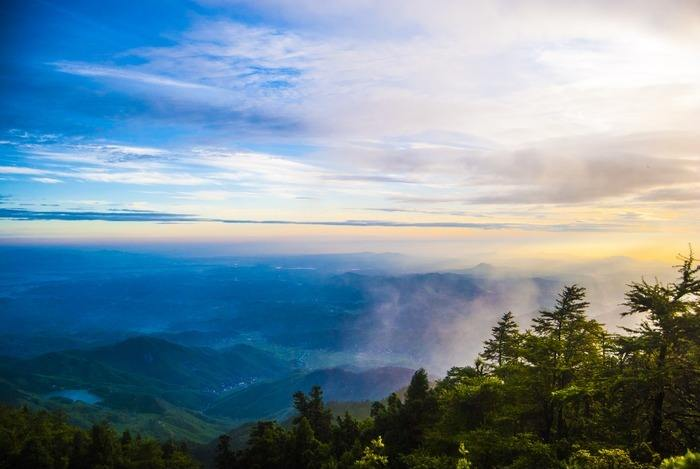

泱 泱 衡 山 南 岳 如 飞

我国素有三山五岳之称，南岳衡山便是其中之一。祝融峰之高，藏经殿之秀，水帘洞之奇，方广寺之深，堪称南岳衡山的四绝。春天的花奇彩斗艳，夏天的云卷云舒，秋日的阳光斑斓，冬天的雪冷峻俏媚。湘江大地的山水蕴育了南岳衡山的独特的奇峰妙景。衡山就像中国脊梁中的一节，承前启后地让中国的脊梁挺起。一个人和一个民族没有脊梁不行，没有坚挺的脊梁更不行，是脊梁支撑起了伟岸的身躯，是脊梁挺起了我们的头颅。衡山不高，更称不上伟岸，但他却用坚挺韧性的力量挺起着春夏秋冬。寒霜酷暑，他承载的是千万年中国民族的文明，历经着屈辱和繁荣。无论何时，他都用脊梁坚挺着中华民族。

 三宝净地——南台寺
三宝净地——南台寺南台寺肇始于南朝梁天监年间，海印来到南岳后，见瑞应峰下有处平坦之地，这里翠峦环绕，茂松修竹苍翠飞烟。于是结茅造庵，草创此寺。因地处山阳，故名“南台”，后又改名为“南台寺”。 自晚唐五代到宋时，已成为南岳一座规模迥阔的佛寺：其中虽有衰落破败，在南宋乾道元年进行一次修缮。
 南岳磨镜台怀古
南岳磨镜台怀古当年道一在此坐禅，怀让傲然出现在道一对面，把惠能的梵语念了几遍：“生来坐不卧，死去卧不坐，一具臭骨头，何为立功课。”念一遍，道一不理；念二遍，道一眨一下眼皮；念三遍，道一呼吸加快；念四遍，道一摇摇头，表示不解。怀让见道一略有触动，但未瓜熟蒂落，便拂袖而去。
 扪心来过试心桥
扪心来过试心桥极为险窄的石桥相连，仅可容一人一步。因许多人过桥时心中害怕得紧，甚至不敢过，所以这才又称其为试心桥的。 会仙桥因所处的位置，云烟缭绕，总让人觉得如入仙境。自然关于她的传说也不会少。众多版本中我最喜欢的就是老头遇仙的故事，有种南柯一梦的感觉，很有意境。
 深邃幽雅的方广寺
深邃幽雅的方广寺衡山方广寺正殿中原有宋徽宗写的"天下名山"四字金匾。寺前有一条小溪，寺左有石涧潭，泉水从石上流下，成为瀑布，注入深不见底的潭中，声若钟鸣。这里林泉山峦秀美，处境幽静深邃，游人到此必有一种"幽深"之感，故前人有"不至方广，不足以知其深"之说。

 雁鹅菌
雁鹅菌菌色浅棕，形如伞状，小如铜钱，大似菜碗，均质松肉肥 ，用以调汤、烧肉、下面，无不鲜香甜美，滑嫩可口。但最别致的食法是做菌油。取新鲜未展开的鹅子菌去蒂、洗净、沥 干，茶油炸熟至水分全部蒸发，待冷却，连油带菌缸浸渍贮存，可数年不变质。 被人们誉为山珍、素食中的佳品。
 云雾茶
云雾茶云雾茶最适宜在海拔八百米至一千一百米的山上栽培，特别是广济寺、铁佛寺、华盖峰等地，这一带云雾交织，阳光和煦，森林覆盖面积大，种出的茶“条索紧细，挺秀多毫，内质优良，清香馥郁，饮后回味。”1980年至1982年连续三年南岳云雾茶被评为部优、省优产品，畅销海内外。
 观音笋
观音笋选挖小笋，务在观音菩萨生日前后几天，择其细嫩而肉厚者，先退去壳，用火煮沸，不至全熟，即取出晒干，然后放置茶油内，用坛贮藏，时间愈久，香味愈浓，取出吃时，加盐椒少许，其味无比。不用油浸，用普通泡帛之法加工，也胜于其他一般干笋之味。观音笋是寺观招待宾客的佳肴。
 茶油
茶油早在公元前100多年汉武帝时，中国就开始栽种油茶树，至今已有2000多年历史。在茶油的核心产区——中国衡山，当地人就有长期食用茶油的习惯，因此也出现了不少“长寿之乡”，这恰恰与有“寿岳”之称的南岳衡山象征的“长寿、荣昌”相得益彰。